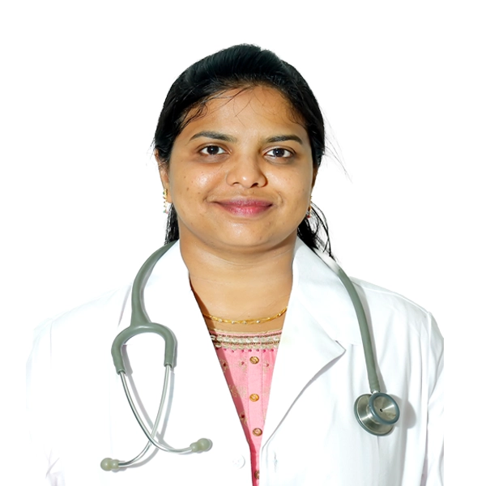
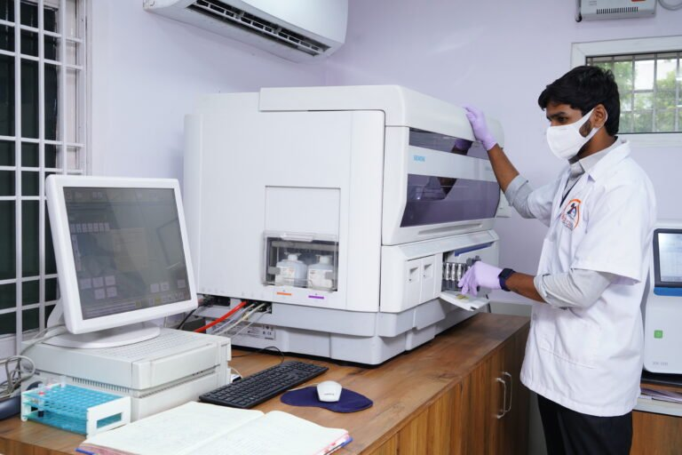
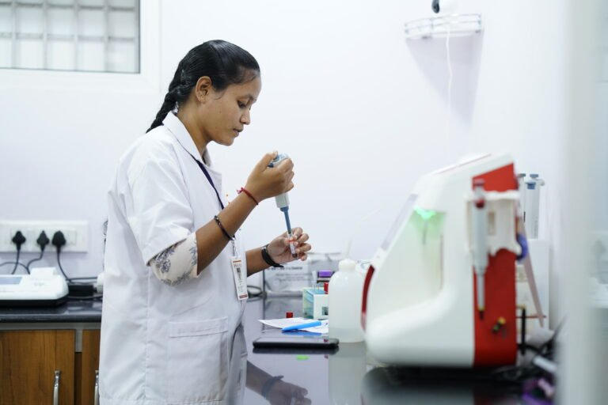
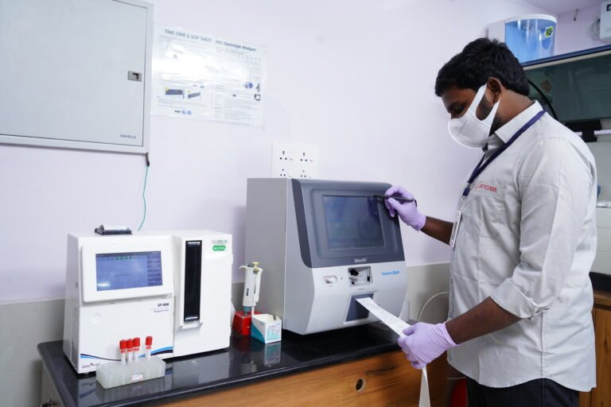

From a pioneering community laboratory in Palakollu to a multi-branch, fully automated reference healthcare network serving over 10 million patients with uncompromised clinical integrity.
Sri Vijaya Clinical Laboratories has successfully completed more than a quarter-century of dedicated service in clinical diagnostics, founded in the culturally vibrant and holistic town of Palakollu in 1997.
Equipped with world-class, state-of-the-art robotic instrumentation, automated chemiluminescence analyzers, and advanced computing infrastructure, we operate at the frontier areas of diagnostics. Our accurate reporting systems assist clinicians with rapid, evidence-based medical decisions while connecting patients and doctors with real-time digital health information.
Under one roof, we offer comprehensive blood investigations, urine analysis, body fluid cytology, histopathology, molecular biology, and microbiology — complemented by doorstep home sample collection across West Godavari and Dr. B.R. Ambedkar Konaseema districts.
Strategically located across West Godavari and Konaseema with full-scale automated analyzers, sterile sample drawing lounges, and dedicated emergency STAT testing.
Our certified phlebotomists collect blood & urine samples right at your doorstep across Palakollu, Bhimavaram, Tatipaka and 45+ surrounding mandals with sterile BD vacutainers and cold-chain temperature preservation.
"Sri Vijaya Clinical Laboratories was founded in 1997 with a simple yet uncompromising conviction: every family in our district deserves medical testing as accurate and dependable as the premier institutes of any metropolitan city, provided with genuine compassion and fair pricing."
Over the last two-and-a-half decades, Ln. Kommula Murali Krishna has championed the introduction of automated diagnostic technologies to Palakollu and rural Andhra Pradesh. Alongside clinical operations, he has led hundreds of free community health checkup camps, diabetic screening drives, and charitable medical initiatives under Lions Club International, JCI, and the Walkers Club.
"To deliver precision diagnostic reports through state-of-the-art laboratory automation, highly qualified pathologists, and stringent quality control, empowering clinicians to make life-saving decisions while keeping healthcare compassionate, accessible, and affordable for every citizen."
Our diagnostic reports are authorized by certified medical doctors (M.D. Pathology & M.D. Microbiology) ensuring multi-tier verification and clinical dependability.
Founder who pioneered district laboratory automation and community healthcare camps since 1997.

Leads laboratory quality assurance, histopathology, peripheral blood morphology, and multi-tier clinical report verification.
Supervises automated blood cultures, infectious disease serology, antimicrobial resistance surveillance, and molecular PCR testing.
Coordinates operational excellence across all diagnostic centres, patient assistance desks, and phlebotomy logistics.
Over a quarter-century of clinical diagnostic milestones, recognized by premier medical accreditation bodies, international quality schemes, and the Godavari community.
Completed 25+ years of uninterrupted diagnostic care in Palakollu, Bhimavaram, and Tatipaka. Trusted by over 10,000+ families and 200+ consulting physicians across West Godavari.

Technology PioneerPioneered bidirectional robotic clinical chemistry and 5-part differential hematology cell counters in the district, reducing turnaround times from days to 3-4 hours with zero manual error.

Certified QualityOperating under strict National Accreditation Board for Testing and Calibration Laboratories (NABL) guidelines and ISO 9001:2015 certified standard operating procedures for complete clinical precision.

100% Quality ScoreContinuous participation in external quality assurance programs from Christian Medical College (CMC) Vellore and Bio-Rad Laboratories USA, consistently achieving top-tier analytical accuracy ratings.
Achieved the landmark of processing over 10 million diagnostic investigations with digital barcode tracking and long-term digital reporting archiving for lifetime health comparisons.
Founder Ln. Kommula Murali Krishna recognized with Lions Club International Humanitarian awards for conducting hundreds of free rural health screening camps, subsidized diabetic checks, and pandemic frontline services.
How Sri Vijaya Clinical Laboratories guarantees that every single parameter on your report is clinically valid, reproducible, and accurate.
Every morning prior to patient sample testing, two to three levels of lyophilized commercial calibrators and controls are run across all automated analyzers. Results are plotted on Levey-Jennings charts with Westgard multi-rules evaluation to verify calibration integrity.
Sri Vijaya Clinical Laboratories actively participates in prestigious External Quality Assurance Schemes (EQAS) through CMC Vellore, AIIMS, and Bio-Rad Laboratories. Blind sample surveys confirm our analytical accuracy matches top national reference laboratories.
All blood and specimen tubes are drawn in vacuum-sealed BD Vacutainers with unique patient barcoding at collection time. Automated analyzers read barcoded orders directly via bidirectional LIS interface, eliminating sample mix-ups and transcription errors.